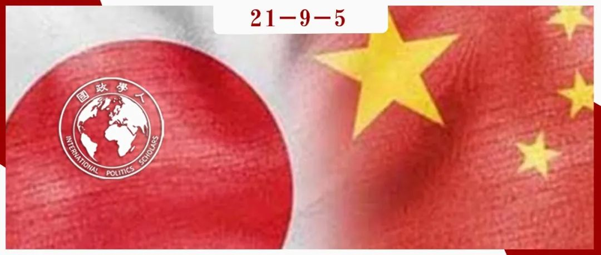

收录于合集 #理论研究 96个

作品简介
作者： Karl Gustafsson，斯德哥尔摩大学国际关系副教授，研究领域包括安全、权力、国际关系中的集体记忆等。Todd H Hall，牛津大学国际关系教授，研究领域包括中国外交政策和理论化情绪在国际政治中扮演的角色等。
编译： 何伊楠（国政学人编译员，中国政法大学国际政治专业硕士）
来源： Karl Gustafsson & Todd H Hall (2021). The Politics of Emotions in International Relations: Who Gets to Feel What, Whose Emotions Matter, and the “History Problem” in Sino-Japanese Relations, International Studies Quarterly , August 2021, sqab071, https://doi.org/10.1093/isq/sqab071
归档： 《国际关系前沿》2021年第9期，总第36期。

内容提要
国际关系领域的大量文献目前主要探讨情绪如何塑造政治观念和行为，以及国际社会行为体如何为了政治目的而寻求操纵、利用或调动情绪及情绪表现。然而，对于“政治斗争如何也能聚焦于谁能或应该感受到什么情绪、以及谁的情绪重要”的问题却很少关注。本文对情绪的分配政治加以理论化，它可以表现为三种一般形式，每一形式都有自己的属性和争论逻辑。第一种以情绪义务为中心，可以理解为行为体感受和表达特定情绪的义务；第二种涉及情绪权利，包括行为体享有的感受或不感受某些情绪的权利；第三种涉及情绪遵从的等级，即对不同行为体的情绪给予不同程度的优先级。本文将通过中日关系中所谓的历史问题的发展，来说明情绪的分配政治如何在国际舞台上展开。
文章导读
01
现有研究：情绪与国际政治
现有针对情绪对国际政治的重要性的研究文献主要分为两种理论流派： 一种侧重于政治情绪（political emotion） ，即情绪反应、感受和情绪变动是如何塑造国际政治的过程和结果的。该流派经常借鉴心理学和神经科学的新兴研究，包括情绪对生理、感受和认知的作用如何影响行为体的兴趣和行为；另一种侧重于 情绪政治（emotional politics） ，即通过呼吁、培养、操纵或模仿情绪和情绪表达来达到政治目的的政治话语和行为。例如，话语如何出于政治目的寻求引起或代表情绪。
在这两者的交叉点也存在重要研究。如考夫曼（Kaufmann）的象征性政治方法（symbolic politics approach）着眼于精英阶层如何煽动和玩弄公众情绪，以及这些情绪如何反过来推动攻击性行为。
02
情绪的政治：三种形式
本文将情绪的政治（politics of emotion）定义为关于谁能或应该感受什么和/或谁的感受重要的政治斗争。 这里情绪的政治是一种以对情绪的主张和情绪为中心的分配政治。
情绪（emotion）是社会性认可的感觉反应和性情的模式，如愤怒、骄傲、羞耻等情绪。由于情绪的无形性使其无法像有形的实物一样被分配，因此情绪往往通过 表现（representation） 成为协商、争论以及斗争的客体，从而体现其分配性政治。表现也包括情绪是如何在抽象的、假定的情境中被唤起，并被归咎为无组织集体或被提升为政治性的深刻含义。
情绪的表达和表现永远不会脱离在其社会环境中循环的 情绪规则（feeling rules） ，即在特定情况下对适当情绪的口头和非口头表达规则。情绪规则是高度政治性的：它们反映了社会对一种情况的共同理解——包括所有的权力关系、等级和价值判断——是如何与行为体内心深处的信仰、态度和产生一种感觉状态的愿望互动的。
情绪规则塑造了决定谁有感受和表达什么的 情绪机制（emotional regimes） 。但这些机制也可以产生真正的个人后果，因为它们构建了行为者面对不同类型的情绪表达（或非表达）和社会考虑的程度时所面临的奖励和制裁。在内化的情况下，这种期望也会引导个体努力诱发或抑制自己的情绪。
尽管情绪规则和等级制度存在于分散而多样的社会期望中，但国家及其制度在促进和实施这些机制方面往往发挥着重要作用。本文寻求在两个方面超越现有理论。第一是将情绪的政治理论明确为三种形式；第二是在承认微观政治维度的重要性的同时，强调情绪的政治也可以在国际层面的宏观政治中发挥作用。
1. 情绪义务的政治（The Politics of Emotional Obligation）
情绪义务的政治是一种责任政治，指的是倡导者（protagonist）寻求强加一个要求给目标群体或行为体去感受一种特定的情绪。 在成功的情况下，会建立一种共享的规范性期望——即在给定的情况、背景或问题下，应该引起行为体的特定消极/积极情绪。
在实践中，情绪义务的政治往往关注其目标的话语和行为。当反对的政治派别出现时，它可能表现为攻击倡导者的叙事、价值体系或情绪规则。简言之，尽管从根本上说这是一种责任政治，但情绪义务的政治可能在叙事、信仰、价值观和情绪规则方面涉及更广泛的斗争。即使倡导者成功地建立了一种普遍的情绪义务，他们也不能保证其内化。但当情绪义务不再显得政治化而变成常识时，情绪义务的政治就会取得最大的胜利。
2. 情绪权利的政治（The Politics of Emotional Entitlement）
情绪权利的政治是一种权利政治，它的倡导者渴望一种感受的特权，寻求创造或捍卫自由，去感受或不感受自己想要的。 这在行为体认为在他们合法的经验和情绪表达中受到不合理干涉时是最强烈的。
情绪权利政治有弱和强两种形式。前者包括不去感受某些情绪的权利，通常寻求免于“消极情绪”——如被认为是得不到满足、不受欢迎和不愉快的感觉——的影响。相反，后者追求对某些情绪的认可，它要求一种享有去感受哀悼、自豪或愤怒感觉的自由。
无论是哪种形式，情绪权利的政治都针对于那些被视为过度影响情绪自由的外部期望、规范或条件。一些情况下，倡导者可能会以外部的条件或实践为目标，因为他们相信其正在阻止他们感受渴望的情绪，或使他们感受到多余的情绪。
3. 情绪遵从的政治（The Politics of Emotional Deference）
情绪遵从的政治核心在于谁的情绪值得考虑、尊重和优先。 倡导者通常寻求将一些特定的情绪影响提升到社会、道德和政治层面的主要考量，这些情绪影响来源于一些给定的决策、实践或者是一些特定行为体的结果。倡导者可以代表自己，也可以代表别人。尽管在指称群体中的成员身份可以提供更大的真实性，但关于情绪遵从的争论可能会在指称群体没有参与甚至活着的情况下发生。
情绪上的遵从可以植根于一种道德经济的逻辑（a logic of a moral economy）。这种逻辑以遵从来提供补偿服务和弥补损失，寻求解释不应得的痛苦和受害者心态，或者是对自我牺牲的损失作出反应。它还可能会吸引一些群体的关注，他们寻求将更高的道德地位赋予某些群体（如儿童）的情绪生活。情绪遵从的政治往往通过“我们必须尊重X的感情”、“那X会怎么想？”、“我们必须考虑对X的情绪影响”等习语表现出来。
对情绪遵从的争论可能是政治斗争的中心，也可能起到辅助作用。在这种斗争中，情绪上的遵从也可能被用来证明特定的政治立场或政策，作为政治参与者可以利用的资源。
在实践中，情绪的政治也可以与政治情绪和情绪政治相交叉。在成功的情况下，情绪的政治可能会塑造目标的纪律或培养自身的政治情绪（political emotions）。情绪政治（emotional politics）以对情绪的政治诉求或其政治表现的形式，也可能同时挑战或加强情绪规则和情绪遵从的等级。
03
情绪的国际政治
1. 身份（Identity）、民族国家（the Nation-State）和集体记忆（Collective Memory）
作者认为，情绪的政治，也可以在国际上在集体和国家之间发生。这其中至关重要的是身份，其种类为集体情绪义务、权利和服从等级提供了一个基础。
国家可以成为民族情绪和民族中心情绪规则的培育者、保护者和倡导者。国家可以进一步寻求向公民或臣民灌输对国家的情绪义务，也可以在国内和国际上推进情绪遵从的体制，承认英雄主义、牺牲主义和受害者主义等民族叙事。这种国家- 民族关系意味着，维护和促进民族共同体的情绪能构成国家的核心责任。因此， 情绪的政治可以在国际上展开，国家行为体既是倡导者，又可以是目标。同样，次国家、跨国和超国家的行为体和身份也可能成为倡导者和目标。
情绪的国际政治也与集体记忆及其趋向的问题紧密联结。许多学者发现，相互冲突的集体记忆——或记忆回路——能阻碍国家合作，加剧领土争端，且阻止和解。作者补充认为，对过去的叙述具有情绪暗示：一个人是否能够或应该感到骄傲、羞耻或愤慨；一个人的痛苦和创伤是被尊重还是被否认；或者一个人对特定情绪的要求是否合理。
2. 国际层面中的情绪的政治（The Politics of Emotion, Internationally）
情绪的国际政治可以与国内政治关切、争端和行动主义（activism）并行并交织在一起。特别是集体记忆，可以在国际舞台上支持情绪权利和义务的主张，当记忆产生分歧之处，便成为情绪后果分配的战场。
这一理论框架在国际关系领域具有三方面贡献。首先，它为系统地识别和理解情绪的政治可能采取的形式提供了概念性词汇；其次，它指出了国际冲突是如何因情绪的政治而演变或加剧的；最后，它允许学界开始理论化和认识这种政治产生的战术和反战术。倡导者可能会通过论证提出主张，呼吁历史、道德，甚至是同理心的理解。当面对情绪化的政治要求时，行为体们也可能会反击，要么通过驳回倡导者的夸大、不真诚或过于敏感，要么通过寻求怀疑或否认他们所反对的主张的基础。这时倡导者也可能采取更有力的措施，如提供报酬、动员社会羞辱，甚至实施胁迫性威胁。
04
案例说明：中日历史问题
本文选取了中日历史问题（the Sino-Japanese history problem）作为案例，即中国和日本在1945年之前日本对中国的行为遗留下的一系列分歧和争议，特别是日本1931年侵略满洲和随后的1937年全面侵华。作者主要关注在历史问题的关键事件中，双方领导人和官方发言人的主要声明和互动，以及日本国内领导保守和右翼反弹的团体的话语。
作者认为，中日建交时的一种情绪的政治产生了情绪上的义务和服从的等级关系，在之后的几十年里构成这段双边关系。然而，这逐渐受到两方面事态发展的挑战： 一是右翼的反对政治势力声称有必要尊重日本战争中的丧亲之人、战死之人以及越来越多的日本儿童的感情；二是日本国内开始广泛抵制通过不断道歉来表现悔恨的义务。
1. 72年体制（The 72 System）
**
**
中日情绪的政治始于1972年中日建交，在1972年的正常化协议中出现的是日本方面有义务为过去的战时行为“谴责自己”，并对中国的感情表示尊重。1972年发表的《中日联合声明》（the 1972 Joint Statement）明确指出：“日方对过去战争给中国人民造成的严重损害清醒认识到责任，深感自责。”
1982年的教科书争议（the 1982 textbook controversy）中，中日回到了情绪上的义务和遵从的等级制度的争议中。有报道称，日本政府试图淡化历史教科书中描述日本战时侵略行为的措辞，中方对此作出强烈回应，称任何这样的修改都会在中国人民中激起“极大愤慨”。当1986年类似事件爆发时，中国迅速敦促日本政府“履行1982年作出的承诺”，指出1982年的经历伤害了亚洲国家人民的感情；时任日本首相中曾根康弘（Nakasone Yasuhiro）进行了干预，以确保这些冒犯性的段落被更改。
1985年，中曾根康弘正式参拜备受争议的靖国神社（Yasukuni Shrine）。北京当局迅速作出回应，批评这次访问“伤害了世界各国人民的感情”，中国学生也举行了大规模示威。日本爆发了关于尊重和义务问题的辩论。一方面，日本政府的代表指出，有必要尊重长期以来一直呼吁首相正式参拜靖国神社的日本遗族会（the Izokukai）的感情。另一方面，批评者，甚至中曾根康弘本人都认为这样的访问“不仅伤害了中国人的感情，也伤害了其他亚洲人民的感情”。
无论是最初的正常化声明，还是后续的教科书争议和首相参拜靖国神社，关键行为体都不是简单地诉诸情绪语言，而是从情绪义务和遵从等级来谈论、辩论并证明自己的选择是合理的，尤其是为了“中国以及其他亚洲人民的感情”。
2. 反对政治（Counter-Politics）
**
**
随着时间的推移，72年体制所体现的情绪义务和遵从的结构面临着由日本保守派和保守派领导的日益壮大的反对政治右翼组织挑战。他们的策略包括否认且攻击历史事实以及中国要求日本忏悔背后的解释、对中国历史教科书的“那又怎么说论”（what- aboutist）模式的抱怨，以及不予理会中国人民感情的真诚。最重要的是，他们开始强有力地提出另一种诉求，即在情绪上尊重日本儿童、日本战争的遗属以及更广泛的公众，为战死者哀悼，并对他们的牺牲表示感激。他们宣称代表着那些在战争中失去亲人的人和在战争中死去的人的感情。
1996年，日本新历史教科书编撰会（Tsukurukai）成立，以更积极地推动右翼的、修正主义的日本历史版本。但他们的理由充斥着情绪，更准确地说，是日本儿童享有民族自豪感的权利。
2001年8月13日，时任日本首相小泉纯一郎（Koizumi Junichiro）参拜靖国神社，并在任首相期间每年坚持参拜。他采取了“重新表述（reframe）”的策略，反复强调参拜靖国神社——以及他将自己的行为描述为表达感激和哀悼——与中日关系中的其他情绪义务和权利是分开的，但却是兼容的：“我向我的国家的战争亡灵表达哀悼。我还是不明白为什么外国人说这是不允许的。”北京方面拒绝了这种重新定义，除了谴责他的参拜是美化军国主义之外，还坚称需要尊重中日两国的感情，并有义务进行反省。
到小泉纯一郎任期结束时，北京当局都拒绝与他会面。虽然在意识形态和历史上的分歧肯定在发挥作用，但在双方核心角色的话语和推理中，更明显的是关于情绪权利、义务和应有的遵从的竞争主张。
3. 道歉问题（The Apology Issue）
**
**
20世纪90年代上半叶，日本人表达的忏悔远远超过了1972年的声明，比如日本天皇对中国人民遭受的苦难表示忏悔，以及日本前首相村山富市（Murayama Tomiichi）在日本投降50周年时，对日本的“殖民统治和侵略”表示了“深切的反省”和“衷心的道歉”。这受到了中国官方媒体高度赞赏，随后成为两国关系中的一个关键节点。
但随着时间推移，中国要求日本继续提供悔改和自责的证据遭到了更大的抵制。1998年中国向日本要求一封书面道歉，就像同年早些时候日方为韩国提供的那般。东京方面则表示拒绝，声称除非中国像韩国一样以一份宽恕声明作为回报，并承诺不再提出这个问题。因此，虽然日本前首相小渊惠三（Obuchi Keizo）确实口头表达了“对中国的悔恨和道歉”，但最终的书面声明中只表达了“深切的悔恨”。
在2015年纪念日本投降70周年的声明中，日本解除道歉义务的愿望也很明显。虽然此前的声明包含明确的道歉，但安倍这次仅提到“日本已多次表达了深刻的悔恨和衷心的道歉”。从这里可以看出，日本出现了“道歉疲劳”（apology fatigue）——大多数日本人认为日本要么正在接近，要么已经达到了充分道歉的节点。
综合上述案例，作者认为：尽管中日两国对历史问题的态度都有工具主义的考量，但是情绪义务、权利和优先权都反复被证明是正当的。 本文的研究表明，单靠完美的道歉或就历史事实达成一致，都无法促成中日和解。 道歉可能意味着接受情绪上的义务，但并不一定会消除它们。关于历史的冲突不仅涉及身份的叙述，还会对谁能够或应该感受什么以及谁的感受重要产生影响。 本文的方法突出表明，稳定的和解可能也需要在谁有权利或义务感受什么以及谁的感受应该得到考虑等问题上达成持久的协议。
05
结论
情绪的政治并不局限于中日历史问题，在日韩慰安妇问题（the issue of wartime sexual slavery）上同样可以看到。 作者认为，除了情绪塑造政治或政治利用情绪及其影响的方式发挥作用外，还存在分析上独特的情绪分配政治。 更广泛地讲，它有助于理解什么是政治的根本：谁能或应该感受什么、谁的情绪重要，这些问题可能具有深刻的政治意义。
译者评述
在本文中，作者认为，政治行为体围绕情绪的斗争与为了资源分配的斗争相近似。存在一种关于谁应该或可以感受什么以及谁的感受重要的情绪的政治，这种情绪的政治包括努力定义和强加情绪规则（情绪义务的政治）、挑战支持情绪诉求的理解和解释（情绪权利的政治），以及挑战某些群体的情绪优先于其他群体的基础（情绪遵从的政治）。
而在这样的情绪的政治中，斗争的逻辑为：先发制人的倡导者通过论证提出主张，呼吁历史、道德、甚至是同理心的理解。目标可能会接受，也可能通过驳回倡导者的夸大、不真诚或过于敏感，或通过寻求怀疑或否认倡导者的主张的基础予以反击。这时，倡导者还可能采取更有力的措施，如提供报酬、动员社会羞辱、甚至实施胁迫性威胁。在这样循环往复的过程中，稳定的和解最终需要双方在谁有权利或义务感受什么以及谁的感受应该得到考虑等问题上达成持久的协议。
依译者个人所见，本文体现了两点创新之处。第一，就分析视角而言，本文没有按照认知主体的视角——从民族主义、身份认同或意识形态等因素分析中日双方在历史问题中的情绪斗争，而是从认知客体出发分析参与者对情绪的构建——参与者通过反复提及的情绪责任、权利和等级制度，构建利害攸关的问题。第二，就分析层次而言，本文展现了情绪的政治在国际层面展开的可能。个体层次的情绪分析会为理解偏好的形成提供一种微观基础。[1]而国家行为体通过寻求向国民灌输对国家的情绪义务，或在国内和国际上推进情绪遵从的体制，承认英雄主义、牺牲主义和受害者主义等民族叙事一样会体现国家的偏好。此外，作者也表示次国家、跨国和超国家的行为体同样具备这种可能，这在关于情绪的政治的进一步探究中具备一定意义。
参考文献
[1] Mcdermott, R. (2004). The Feeling of Rationality: The Meaning of Neuroscientific Advances for Political Science. Perspectives on Politics, 2, 699.
词汇整理
情绪义务 emotional obligation
情绪权利 emotional entitlement
情绪遵从 emotional deference
倡导者 protagonist
行动主义 activism
中日历史问题 the Sino-Japanese history problem
《中日联合声明》 the 1972 Joint Statement
日本新历史教科书编撰会 Tsukurukai
道歉疲劳 apology fatigue
责编 | 张彦赪 赖永祯
排版 | 臧泽华 梁羽 杜丛竹
文章观点不代表本平台观点，本平台评译分享的文章均出于专业学习之用, 不以任何盈利为目的，内容主要呈现对原文的介绍，原文内容请通过各高校购买的数据库自行下载。

国政学人
支持学术公益与知识传播
微信扫一扫赞赏作者 __赞赏
已喜欢，对作者说句悄悄话
取消 __
发送给作者
发送
最多40字，当前共字
上一页 1/3 下一页
长按二维码向我转账
支持学术公益与知识传播
受苹果公司新规定影响，微信 iOS 版的赞赏功能被关闭，可通过二维码转账支持公众号。